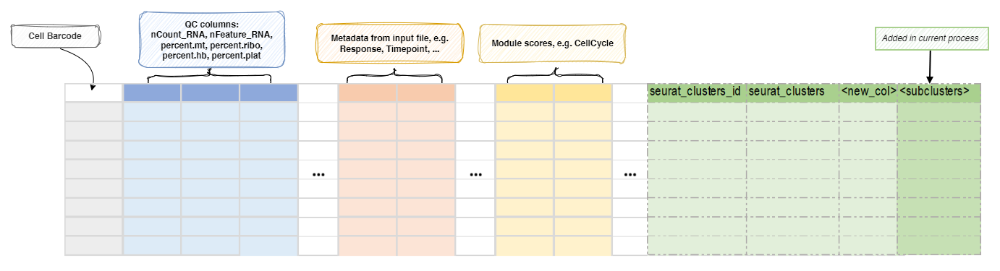

SeuratSubClustering¶
Sub-cluster the selected T cells.
Find clusters of a subset of cells.
It's unlike [Seurat::FindSubCluster], which only finds subclusters of a single
cluster. Instead, it will perform the whole clustering procedure on the subset of
cells. One can use metadata to specify the subset of cells to perform clustering on.
For the subset of cells, the reductions will be re-performed on the subset of cells,
and then the clustering will be performed on the subset of cells. The reduction
will be saved in sobj@reduction$sub_umap_<casename> of the original object and the
clustering will be saved in the metadata of the original object using the casename as the column name.
Environment Variables¶
ncores(type=int;order=-100): Default:1.
Number of cores to use.
Used infuture::plan(strategy = "multicore", workers = <ncores>)to parallelize some Seurat procedures.mutaters(type=json): Default:{}.
The mutaters to mutate the metadata to subset the cells.
The mutaters will be applied in the order specified.-
subset: An expression to subset the cells, will be passed totidyseurat::filter(). -
RunUMAP(ns): Arguments forRunUMAP().
objectis specified internally as the subset object, and-in the key will be replaced with..
dims=Nwill be expanded todims=1:N; The maximal value ofNwill be the minimum ofNand the number of columns - 1 for each sample.dims(type=int): Default:30.
The number of PCs to usereduction: The reduction to use for UMAP.
If not provided,sobj@misc$integrated_new_reductionwill be used.<more>: See https://satijalab.org/seurat/reference/runumap
FindNeighbors(ns): Arguments forFindNeighbors().
objectis specified internally, and-in the key will be replaced with..reduction: The reduction to use.
If not provided,sobj@misc$integrated_new_reductionwill be used.<more>: See https://satijalab.org/seurat/reference/findneighbors
FindClusters(ns): Arguments forFindClusters().
objectis specified internally, and-in the key will be replaced with..
The cluster labels will be prefixed with "s". The first cluster will be "s1", instead of "s0".resolution: Default:0.8.
The resolution of the clustering. You can have multiple resolutions separated by comma.
The results will be saved in<casename>_<resolution>.
The final resolution will be used to define the clusters at<casename>.<more>: See https://satijalab.org/seurat/reference/findclusters
cache(type=auto): Default:/tmp.
Whether to cache the information at different steps.
IfTrue, the seurat object will be cached in the job output directory, which will be not cleaned up when job is rerunning.
The cached seurat object will be saved as<signature>.<kind>.RDSfile, where<signature>is the signature determined by the input and envs of the process.
See https://github.com/satijalab/seurat/issues/7849, https://github.com/satijalab/seurat/issues/5358 and https://github.com/satijalab/seurat/issues/6748 for more details also about reproducibility issues.
To not use the cached seurat object, you can either setcachetoFalseor delete the cached file at<signature>.RDSin the cache directory.cases(type=json): Default:{'subcluster': Diot({})}.
The cases to perform subclustering.
Keys are the names of the cases and values are the dicts inherited fromenvsexceptmutatersandcache.
If empty, a case with namesubclusterwill be created with default parameters.
Metadata¶
The metadata of the Seurat object will be updated with the sub-clusters
specified by names (keys) of envs.cases:
